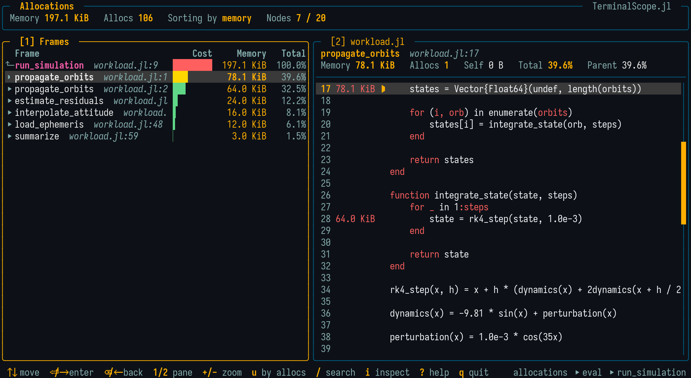

Allocation Profile
The allocs mode of @scope runs an expression under the allocation profiler (Profile.Allocs) and opens the viewer with the tree of allocation sites:
@scope allocs [sample_rate = 1.0] [warmup = true] exprThe expression is first executed once as a warm-up, so its compilation happens before the recording starts, and then executed again under the profiler. The value of expr is discarded.
The following options are available:
sample_rate: Fraction of the allocations recorded by the profiler. With the default1.0, every allocation is recorded and the shown bytes and counts are exact; with a smaller value, they are the recorded fraction. (Default:1.0)warmup: Iftrue, runexpronce before profiling it. (Default:true)
The warm-up run means expr is executed twice. Pass warmup = false when its side effects must happen only once — and, in that case, consider a lower sample_rate: profiling a first call at full rate records a stack trace for every allocation of the compiler itself, which can take many minutes and look like a hang.
The Viewer

The tree is ranked by allocated bytes and the header shows the totals of both units. Pressing u re-ranks the whole tree by allocation counts (and back), recomputing every percentage and cost bar, so both the "few huge buffers" and the "many small allocations" problems are easy to spot.
Descending past the deepest frame of a branch lists the allocated types (Vector{Float64}, String, ...) as leaves with their own costs, so the viewer shows not only where the allocation happened but also what was allocated.
To keep the tree readable:
- Compiler-mangled names are demangled (keyword bodies like
#f#123becomef, and anonymous functions are shown asλ#37); - Pure keyword wrapper frames (
kwcalland same-named keyword bodies) are collapsed; - The C runtime allocator frames at the leaf side of the stacks are stripped, so branches bottom out at the allocating Julia frame.
Per-Line Costs in the Source Panel
In the allocation viewer, the source panel gains a heat-colored column between the line numbers and the code with the cost charged to each line, following the active unit. Within a file, each allocation is charged only to the innermost frame of that file, so caller lines stay clean while user files are still credited for allocations that bottom out inside Base.
Viewing Collected Data
scope_allocs() # Uses `Profile.Allocs.fetch()`.
scope_allocs(results) # Uses an `AllocResults` collected before.Examples
julia> using TerminalScope
julia> @scope allocs my_workload()
julia> @scope allocs sample_rate = 0.01 cold_workload()
julia> @scope allocs warmup = false push_to_global_state!()